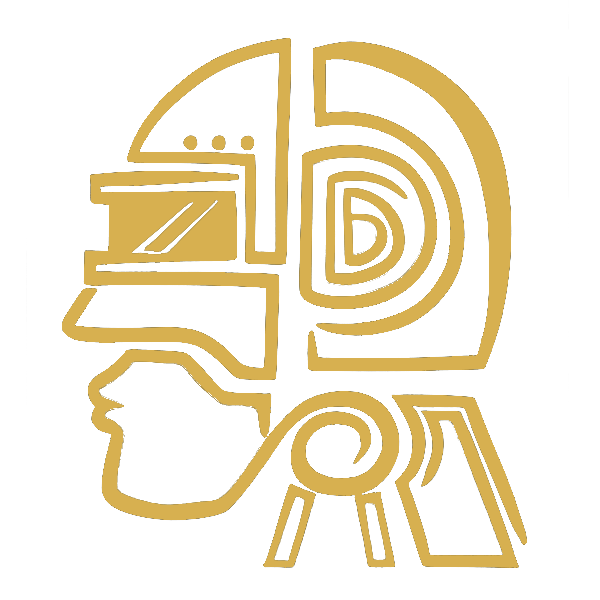

Blox Fruits
Blox Fruits - это мой любимый плейс в Roblox. Это интересная игра, в которой есть очень много разных:
- Особая(золотая)
- Мифическая(красная)
- Легендарная(розовая)
- Редкая(фиолетовая)
- Сверхкомонн(голубая)
- Комонн(серая)
Все редкости в Blox fruits
Тоесть все редкости идут по яркости и красоносчти
- Фруктов
- Мечей
- Пушек
- Аксессуаров
- Расс
- Боевых стилей
- NPC (Добрых и плохих)
Kitsune - это самый дорогой фрукт в игре. Он стоит 8.000.000$- игровая валюта. У Kitsune очень большой урон и скорость. Еще он может ходить по воде и переносить игроков на спине. Хвосты В начале игры или после смерти вы начинаете с 1 хвостом. Счётчик восполняется со временем, но каждый скилл Фрукта как и тратит счётчик хвостов, так и восполняет его намного больше затраченного, после попадания. Когда счётчик хвостов достигнет максимума, появляется возможность трансформироваться. Трансформация тратит примерно 3 деления счётчика единожды при активации, получении урона и смене Аксессуара с эффектами, прибавляющими здоровье. Однако, пассивная регенерация счётчика в трансформации пропадает. Изменения:
- хвост: Без изменений.
- хвост: Увеличение скорости в два раза, а также увеличение рывка и прыжков, что подчёркивается эффектами.
- хвост: Вокруг вас появляются 3 светящихся ядра, что наносят урон тиками при попадании скиллами Фрукта.
Тесто это тоже очень крутой фрукт, но китсуне всеравнона первом месте по крутости. Но тесто тоже имеет свои плюсы.
У теста есть V2 версия .Чтобы его получить надо пройти кучу испытаний, но с друзьями будет намного легче.
Полное Пробуждение (V2 версия) Теста стоит 18,500 фрагментов. Для разблокировки доступа к покупке Микрочипов для Рейда Теста, необходимо:
1.Иметь 1500+ уровень.
2.Иметь Чашу Бога и 10 мешков какао, после чего скрафтить Сладкую Чашу у NPC Создатель Сладостей в Море Вкусностей в Третьем Море.
3.Поговорить с NPC drip_mama, а затем убить 500 мобов на острове, где он находится.
4.Снова поговорить с drip_mama, отдать ему Сладкую Чашу. Это действие заспавнит Рейд Босса Короля Теста.
5.Убить Короля Теста, с которого со 100% шансом выпадает Красный Ключ.
6.Использовать Красный Ключ для открытия двери, которая ведет в комнату с NPC Пирожный Учёный, который продает Микрочип для Рейда Теста.
После первой покупки Микрочип можно будет покупать у Мистического Учёного.
КДК (сокрашение) - это самый сложно-получаемый меч в игре, и также самый сильный. Проклятая Двойная Катана может быть получена в процессе прохождения Пазла Проклятой Двойной Катаны. Для начала Пазла нужно иметь 350 Мастерства на Яме и Тушите, а также как минимум 2200 уровень. Если у игрока есть Яма и Тушита, он может получить доступ к зданию, но для выполнения испытаний свитков будет нужен необходимый уровень и мастерство. Если игрок попытается начать испытание свитка без выполнения требований, высветится диалог: «Надписи слишком сложны для прочтения...»
Свиток Ямы
Шаг 1 Для начала, игрок должен поговорить с NPC Мастер Склепа, который находится за входом в здание со свитками, которое, в свою очередь, находится за Особняком в Третьем Море. Мастер Склепа спросит, хочет ли игрок войти, и откроет дверь прямо на обратной стороне здания. Боль и Страдания — Для выполнения необходимо получить удары от моба или игрока, держа Яму в руках. Туман Мучений — На карте игрока появляется туман, для выполнения необходимо убить всех Мобов с фиолетовыми метками. Мобы располагаются на всех островах Третьего Моря. Бойтесь Жнеца — Для выполнения необходимо умереть от рук Жнеца Душ. После выполнения третьего испытания игрока перенесет в Адское Измерение, где нужно будет зажечь три факела. После зажжения каждого будут появляться Проклятые Скелеты, а при зажжении последнего со Скелетами дополнительно заспавнится Босс Посланник Ада, использующий Тьму V2. После убийства всех Мобов в Адском Измерении, адские врата загорятся зелёным светом. При входе во врата игрока телепортирует в склеп со свитками, после чего свиток Ямы можно будет сжечь.
Свиток Тушиты
Легенда Доков — для выполнения необходимо поговорить с тремя Дилерами Лодок на трёх разных островах, выбрав последний пункт в диалоге "Pardon me". Чувство Долга — для выполнения необходимо убить хотя бы одного Моба на Рейде Пиратов в Замке на Море и дождаться его окончания. Бездушность — для выполнения необходимо убить Королеву Торта, нанеся последний удар, пока играет музыка. После выполнения третьего испытания игрока перенесет в Райское Измерение, где нужно зажечь три факела. После зажжения каждого будут появляться Проклятые Скелеты, а при зажжении последнего со Скелетами дополнительно заспавнится Босс Страж Рая, использующий Свет V2. После убийства всех Мобов в Райском Измерении, райские врата загорятся белым светом. При входе во врата игрока телепортирует в склеп со свитками, после чего свиток Тушиты можно будет сжечь.
Для начала пазла нужно получить Кулак Тьмы, предмет, который выпадает из сундуков или Морских Зверей с шансом в несколько процентов во Втором Море. После получения Кулака Тьмы нужно пройти в секретную лабораторию с рейдами в локации Горячо и Холодно и начать Рейд Ордера, не покупая чип у NPC Arlthmetic, для этого нужно встать в главную капсулу и нажать на кнопку. Важно: не иметь в инвентаре чип от Arlthmetic, иначе запустится рейд Ордера. После исчезновения Кулака Тьмы нужно купить чип у Arlthmetic и начать рейд Ордера, из которого с шансом 2% выпадает Основной Мозг (Core Brain). После получения Основного Мозга нужно вернуться в секретную лабораторию и проделать те же действия, что и с Кулаком Тьмы, затем откроется проход в еще более секретную лабораторию, где находится NPC-капсула. Поговорите с ним, и он предложит купить Расу Киборга за 2500 фрагментов
Тёмный Кинжал может быть получен с шансом 2.5% при убийстве Рейд Босса rip_indra, Рейд на которого можно начать в тронном зале в Замке на Море в Третьем Море при помощи Чаши Бога. Для получения дропа с Рейд Босса rip_indra нужно нанести ему урон минимум на 10% Здоровья.
Для начала пазла нужно заспавнить Рейд Босса rip_indra с помощью Чаши Бога. Когда Рейд Босс rip_indra заспавнен, необходимо пойти на Остров Гидра, подойти к концу водопада и пройти через него, попав в скрытую пещеру, в конце которой расположена дверь, что ломается любым разрушающим скиллом (на подобии облаков в храме на Небесных Землях, ведущих в Верхние Небесные Земли). Сразу за дверью располагается алтарь с мечом Яма и несколько призраков, которых можно убить. При заспавненом Рейд Боссе rip_indra открывается секретный проход в этой комнате, который скрыт за самым правым при входе водопадом (проход на верхушке синей текстуры). При проходе через маленький водопад, вы попадаете в коридор, пройдя к концу которого перед вами покажется белая неоновная дверь, пройдите через нее. Пройдя через белую дверь, вас телепортирует на Плавающую Черепаху, вокруг сгустится туман, а целью будет зажечь пять факелов в нужной поочередности (даже если Рейд Босс rip_indra после прохода через белую дверь будет убит, вы все равно сможете продолжать пазл) После зажжения всех пяти факелов откроется дверь к гробнице Босса Лонгмы с сообщением "Хорошо. Теперь ты можешь войти в мое убежище". С этого Босса со 100%-ным шансом выпадет Тушита. Вход в гробницу распложен напротив моста с первым факелом, а также возле Прошлого Героя, учителя Электрического Когтя.

Будда-это хороший фрукт на котором разблокированно сразу 2 способности. Первая способность делает игрока намного сильнее и больше. Этот фрукт может может бить мечом,стилем боя,пушками. А вторая способность заряжает шар света, затем касается земли ладонью, создавая мощный взрыв, который откидывает ближайших врагов.Также есть V2 версия. Полная защита Будды V2 с Аурой макс. уровня — 76.8%. Трансформацию можно использовать для того, чтобы не давать мобам вообще задевать игрока ударами, т.к атаки игрока имеют большую дальность. Будда повышает только хитбокс атак Мечей и Боевых Стилей, но не урон. Пробуждения скилла Z достаточно для того, чтобы перестать получать урон от воды, множество игроков Пробуждают только этот скилл, однако V также хорош в ПвП, особенно для тимеров, а также против толп мобов.
Акула Ужаса может быть найдена исключительно в Областях Повышенной Опасности 2-6. После спавна Акула Ужаса первым делом атакует Лодку игрока. Переключить ее внимание довольно просто, нужно просто атаковать ее. Но осторожней, сбежать от Акулы Ужаса невозможно, если вы не способны подняться высоко в воздух, ибо Рейд Босс притягивает окружающих противников одним из скиллов. Обычная версия имеет всего лишь 150,000 Здоровья и с нее невозможно получить Меч Акулий Якорь.
Лисья Лампа может быть получена при обмене у Святыни Кицунэ. Если заплатить Святыне Кицунэ 15 Лазурных Угольков, то шанс получения Лисьей Лампы будет составлять 20%. Если заплатить Святыне Кицунэ меньше 15 Лазурных Угольков, то шанс получения Лисьей Лампы будет гораздо ниже.
- ссылка на ютуб
- ссылка на каталог роблокса
- переводчик
- гугл
Список моих любимых сайтов